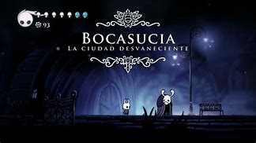
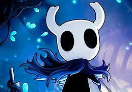
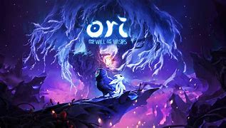
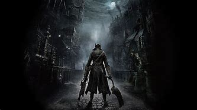

HK the best game all over the years and world
hollow knight es juego basado en la historia de un pequeño caballero que dejo su lugar de origen sin siquiera saber que buscaba con certeza encontrando su respuesta
al volver a su lugar de nacimiento dispuesto a hacer todo lo que sease necesario para lograr su mision de existencia y todo comienza cuando se encuentra con el interasante y raro pueblo de bocasucia...

al principio de el juego nos encontramos con un pequeño pueblo conocido como bocasucia donde nos encontramos con nuestro primer amigo un insecto viejo que nos cuenta un poco
sobre la historia de el pueblo y de la historia de el reino en general posteriormente bajamos por un viejo pozo y nos adentramos a el interior de las cavernas de el reino en
busca de nuestro destino, el pueblo de bocasucia y el juego en general tienen un ambiente muy oscuro y un poco depresivo al mostrar la hermosura de un reino caido que cayo tan
rapidamente que dejo la belleza de las magnas obras mayormente intactas ademas de que cada ambiente tiene su propia banda sonoras que son un autentico manjar auditivo despertando
sentimientos en el usuario que poco a poco va adentrandose en la historia descubriendo nuevas cosas asi y desentrañando la verdad y misterio del reino.
El caballero vacio
En esta historia somos un pequeño hijo de la luz y el vacio somos el recipiente puro, somos el hollow knight.

El caballero es nacido de vacio y luz destinado a sellar la luz que plaga sus sueños, no posee un voluntad que pueda romperse, no posee una mente que piense y se corrompa
ni una voz que grite de dolor, es el recipiente puro que contendra la luz en su oscuridad, es el hijo de un dios y una dama, es uno de muchos sin importancia que ascendio
hasta conseguir una conocimiento indeseado cumpliendo su deber asi eso terminara su existencia pero sin un deber que cumplir su existencia ya no tenia sentido alguno.
La compañia pesadilla
Poco hablaremos de la leyenda de la compañia pesadilla pero dejaremos una reseña de lo que es y un link para investigar mas a detalle, la compañia pesadilla va de reino caido
en reino caido o cayendo en busca de el resto de la llama escarlata que vive en los corazones de los reinos para terminar de extinguirlos y avivar su ritual, a veces somos como reinos
caidos o cayendo y a veces debemos estar listos para encarar las pesadillas.

"La llama arde hermosamente esta noche buscador, acompañame y regocijanos en este baile"
Encuentra los secretos de la llama escarlata
3 bases de la historia
Conocer un poco de estos personajes puede ayudarte a comprender un poco mas de el pasado y los misterios de el reino.
| Enemigo |
Lugar donde aparece |
Genero |
| Hornet |
Sendero verde |
Hembra |
| Maestro de Almas |
Ciudad de Lagrimas |
Masculino |
| Recipiente roto |
Cuenca antigua |
No conocido |
Otros juegos que son similares a Hollow knight
- Dark souls

- Ori

- bloodborn
